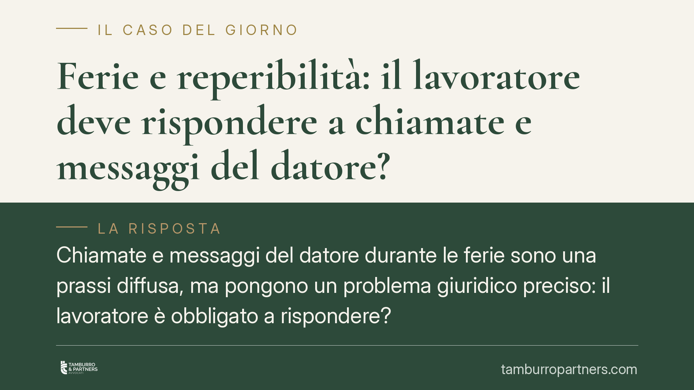

Ferie e reperibilità: il lavoratore deve rispondere a chiamate e messaggi del datore?
Chiamate e messaggi del datore durante le ferie sono una prassi diffusa, ma pongono un problema giuridico preciso: il lavoratore è obbligato a rispondere? La risposta tocca il diritto al riposo garantito dalla Costituzione e la recente disciplina sulla disconnessione. Vediamo quali sono i limiti e come regolarsi.

Il problema
Un dipendente in ferie riceve la telefonata del responsabile o un messaggio su WhatsApp con richieste di lavoro. La scena è comune, ma il quadro giuridico è meno intuitivo di quanto sembri.
Le ferie non sono un intervallo neutro nel rapporto di lavoro: sono un istituto costituzionalmente tutelato, finalizzato al recupero delle energie psicofisiche. Le sollecitazioni del datore durante questo periodo entrano quindi in tensione con una funzione precisa che la legge attribuisce al riposo.
Inquadramento normativo
L'articolo 36 della Costituzione riconosce al lavoratore il diritto alle ferie annuali retribuite e stabilisce che esso è irrinunciabile. La ratio è chiara: le ferie servono a garantire il recupero delle energie, non a costituire un mero credito economico.
A livello ordinario, l'articolo 10 del D.Lgs. 66/2003 fissa in almeno quattro settimane annuali il periodo minimo di ferie, di cui due da godere nell'anno di maturazione. Durante le ferie il rapporto di lavoro resta in essere, ma l'obbligo principale della prestazione è sospeso. In altre parole, il lavoratore non è tenuto a lavorare, e ciò include rispondere a chiamate o messaggi che comportino un'attività lavorativa effettiva.
Si aggiunge il tema del diritto alla disconnessione, cioè la facoltà del lavoratore di non essere raggiungibile fuori dall'orario di lavoro. In Italia è disciplinato in modo esplicito per il lavoro agile dall'articolo 19 della Legge 81/2017, che impone di individuare nell'accordo individuale i tempi di riposo e le misure tecniche e organizzative per assicurare la disconnessione dagli strumenti di lavoro. Fuori dal lavoro agile non esiste una norma generale altrettanto puntuale, ma il principio del riposo effettivo resta il criterio guida.
Cosa cambia in concreto per il lavoratore
Durante le ferie il dipendente non ha, in linea di massima, l'obbligo di rispondere a comunicazioni che richiedano lo svolgimento di attività lavorativa. Non rispondere non integra un inadempimento, perché in quel periodo l'obbligo di prestazione è sospeso.
Attenzione però ad alcune situazioni:
- Se il contratto collettivo o individuale prevede una clausola di reperibilità con relativo compenso, la disciplina cambia: la reperibilità è essa stessa oggetto di remunerazione e obbligo.
- Se il datore, di fatto, richiede una prestazione lavorativa e il lavoratore la esegue, quel tempo non è ferie ma lavoro: le ore andrebbero riconosciute e retribuite, e le ferie "consumate" in quel modo non assolvono alla loro funzione.
- Una singola comunicazione informativa, non urgente e non lavorativa, si colloca in una zona grigia: la valutazione dipende dalla natura e dalla frequenza delle richieste.
Per il datore di lavoro, il punto delicato è la ripetitività e la pressione: sollecitare in modo sistematico un dipendente in ferie può tradursi in una lesione del diritto al riposo e, nei casi più gravi, in condotte censurabili sul piano organizzativo.
Cosa fare in concreto
- Verifica il contratto: controlla se esistono clausole di reperibilità o previsioni del CCNL sulla disponibilità fuori orario. Da lì dipende gran parte della risposta.
- Distingui la natura della richiesta: una domanda che richiede di lavorare è diversa da un messaggio informativo. Nel primo caso non sei tenuto a rispondere durante le ferie.
- Documenta le richieste: conserva messaggi e chiamate se percepisci una pressione sistematica. In un eventuale contenzioso, la prova della condotta è decisiva.
- Comunica in modo chiaro, prima delle ferie, la tua non disponibilità (ad esempio con una risposta automatica), indicando eventuali referenti per le urgenze.
- Rivolgiti a un professionista se le sollecitazioni sono continue, se ti viene chiesto di lavorare durante le ferie o se ricevi contestazioni per non aver risposto.
Un'ultima considerazione
Rispondere per cortesia a un singolo messaggio non trasforma automaticamente le ferie in lavoro. Ma la sistematicità cambia il quadro: quando la reperibilità diventa di fatto obbligatoria e non pattuita, il diritto al riposo perde la sua sostanza. La tutela, in questi casi, passa dalla capacità di documentare e qualificare correttamente le richieste ricevute.
---
*Contributo informativo a cura di Tamburro & Partners - Avv. Giuseppe Tamburro. Non costituisce parere legale.*
Ogni storia di lavoro ha i suoi tempi.
Se gestisci HR e vuoi un confronto su contenzioso, ispezioni o licenziamenti, scrivi allo studio. Ti rispondiamo entro un giorno lavorativo.